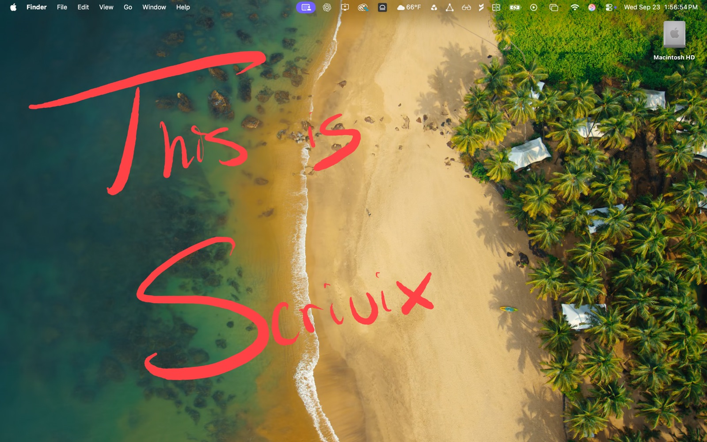
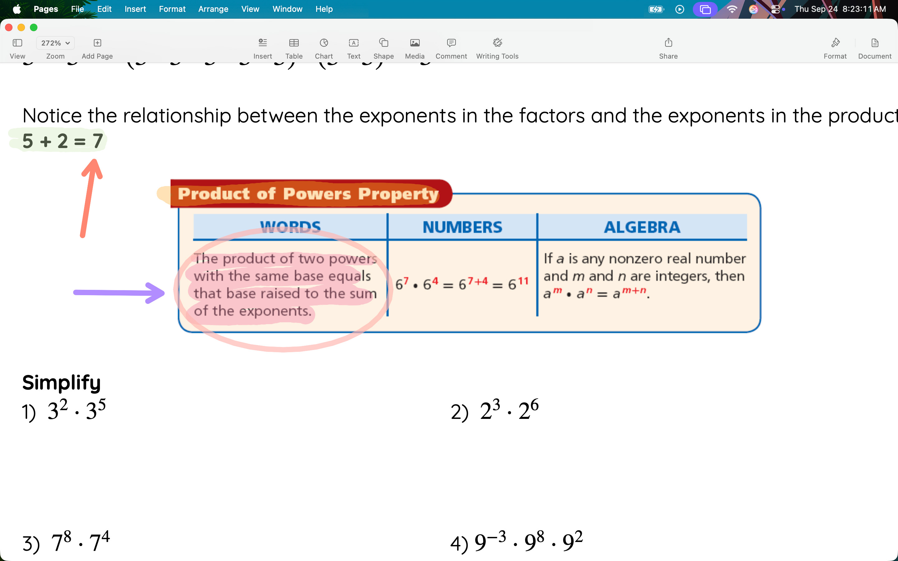
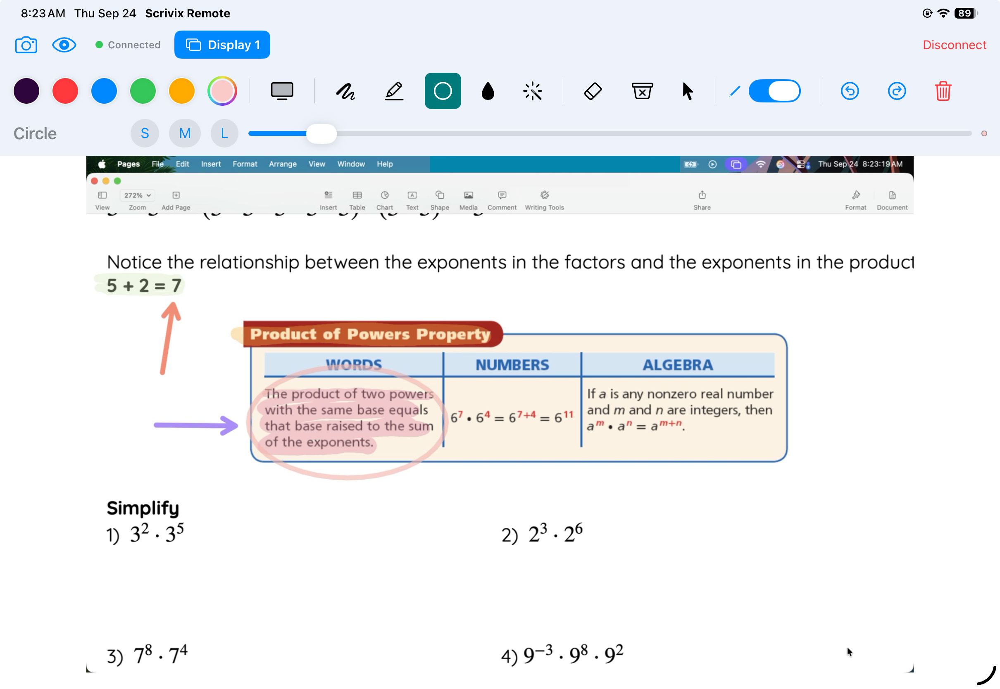
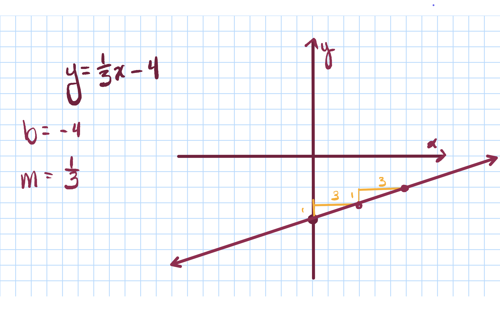
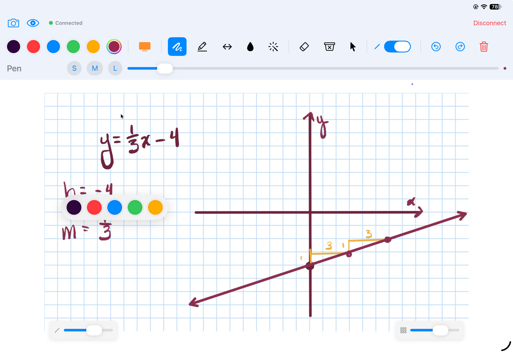

Meet Scrivix Remote
Your ideas, up on the big screen.
Write on your iPad. See it on your Mac.
Scrivix Remote · iPad

On your Mac

One thought. Two screens. Anywhere in the room.
Scroll to see it connect ↓
A closer look
Make the lesson easy to follow.
Circle the idea. Point to the next step. Let the whole room see what you mean.
On your Mac

From Scrivix Remote

Your marks stay in sync as you teach.
Room to think
Start with a fresh canvas.
Switch to graph paper, lined paper, or your own image and work through an idea on iPad, and show each step on your Mac.
On your Mac

From Scrivix Remote

A whiteboard when you need one. Your Mac stays in view.
Smart shapes
A quick sketch. A cleaner shape.
Draw a shape with Apple Pencil, then hold briefly to let Scrivix refine it.
Open video directly ↗
Scroll to watch the shape take form ↓
Made for the moment
Stay with your audience.
Keep your ideas moving.
Scrivix turns your iPad into a wireless drawing surface for your Mac. Annotate a lesson, explain a detail, or mark up a presentation as it happens.
- Write from your iPad. Draw and highlight on your Mac with Apple Pencil while you move around the room.
- Present over familiar apps. Annotate over Keynote, PowerPoint, PDFs, browsers, videos, and more without changing the original file.
- Control your Mac remotely. Click, drag, scroll, and use supported zoom gestures from iPad.
- Choose the right tool. Use Brush to draw, Highlighter to emphasize, Laser Pointer to point, plus Fill, erasers, undo, and redo.
- Add precise shapes. Use the shape tools for a single arrow, double arrow, straight line, rectangle, or circle.
- Draw a smart shape. Sketch a rough rectangle, triangle, line, or circle, then briefly hold Apple Pencil down to snap it into a cleaner shape.
- Change your canvas. Switch between a transparent overlay and whiteboard, graph, lined, or photo backgrounds.
- Save a clean screenshot. Capture the canvas or presentation without toolbar controls in the saved image.
- Keep the session local. Pair with a four-digit code; your drawings, screen stream, and controls are always local and private.
- No sign-up, account, or subscription is required.
For schools and districts purchasing iPad apps in volume, choose the Education app.
To annotate and control your Mac, install the companion Mac app too.
Works with Zoom, Google Meet, and Microsoft Teams when you share your entire screen on a video call.